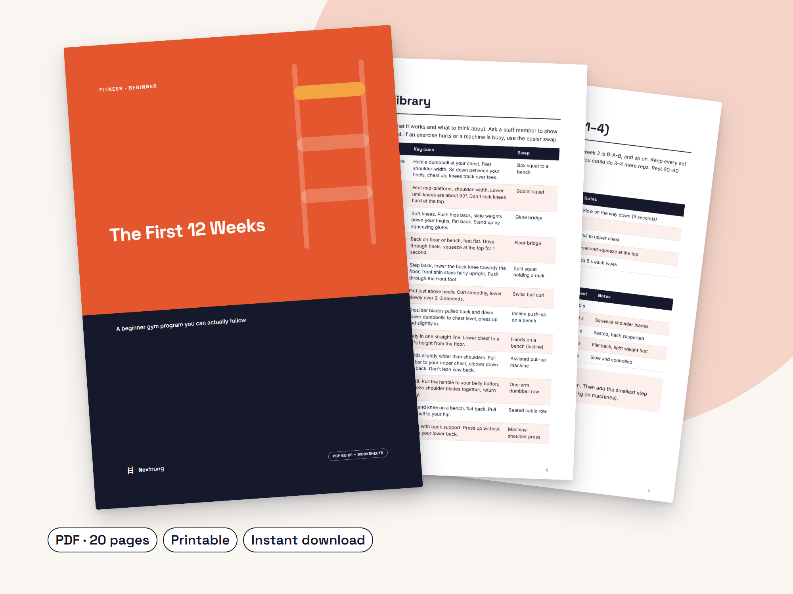

Walk into the gym knowing exactly what to do, for 12 weeks
The First 12 Weeks: A beginner gym program you can actually follow
- 36 sessions planned: 3 a week, 45–60 minutes each
- 15 exercises explained in plain English, each with an easier swap
- A simple rule for when to add weight
- Printable log and attendance tracker to see your progress
- Recovery tips for shift workers and busy people
Launch week: 20% off with code LAUNCH20 at checkout, until Mon 2 Nov, 11:59pm Perth time.
Made for: Complete beginners and people coming back after a long break.
See it working
Week 1 is already written: workouts A-B-A at an easy effort (RPE 6–7), an 8-minute warm-up, a 5-minute cool-down, and an easier swap for every exercise.
What's inside
- 12-week, 3-days-a-week program in three phases (A/B and A/B/C workouts)
- Exercise library: 15 exercises with plain-English cues and an easier swap for each
- 8-minute warm-up and 5-minute cool-down routines
- How to find your starting weights and when to add weight (double progression)
- Effort scale (RPE) explained, plus what to do if you miss sessions
- Recovery basics for busy people and shift workers
- Printable training log, 12-week attendance tracker and progress check-ins
- Instant PDF download, A4, print or use on your phone
Look inside


Walking into the gym without knowing what to do is hard, and it's easy to give up without a plan. The First 12 Weeks gives you a plan for every single session, so you just open the page and follow it.
It's built in three phases. Learn (weeks 1–4) teaches you the movements with light weights. Build (weeks 5–8) adds volume and a third workout. Strong (weeks 9–12) makes your main lifts heavier. Three sessions a week, 45–60 minutes each, using the equipment found in most commercial gyms.
Everything is written in plain language for complete beginners or anyone coming back after a long break. No supplements to buy, no extreme diets, no hype.
Who it's for
- Complete gym beginners
- Anyone coming back after a long break
Is it worth it?
A$19 once, less than a single personal training session. Instant download, prices in AUD. Digital downloads have no change-of-mind refunds; if a guide is faulty or not as described, we'll fix it, replace it or refund you.
Questions
Is this suitable if I've never been to a gym?
Yes. It's written for complete beginners. The first four weeks use light weights and focus on learning each movement, and every exercise has an easier swap.
Can I do it at home?
It's designed for a commercial gym with dumbbells, a cable machine and a leg press. Some exercises work at home with dumbbells, but it isn't a home program.
Will I get a specific result?
No program can promise a result. Progress depends on consistency, sleep, food and your starting point. What it gives you is a clear, sensible plan to follow.
Is this medical advice?
No. It's general information for healthy adults. Check with a doctor before starting if you have a medical condition, injury or are pregnant.
How do I get it?
It's an instant PDF download after purchase. Print it or keep it on your phone.
Start Monday with session 1 already planned.
Please note: This program is general information for healthy adults and is not medical advice. Check with a doctor or qualified health professional before starting a new exercise program, especially if you have a medical condition, injury or are pregnant. Stop any exercise that causes pain, dizziness or chest discomfort and seek medical help. Results vary from person to person and are not guaranteed. This guide was drafted with the help of AI writing tools, then edited and designed by Nextrung.